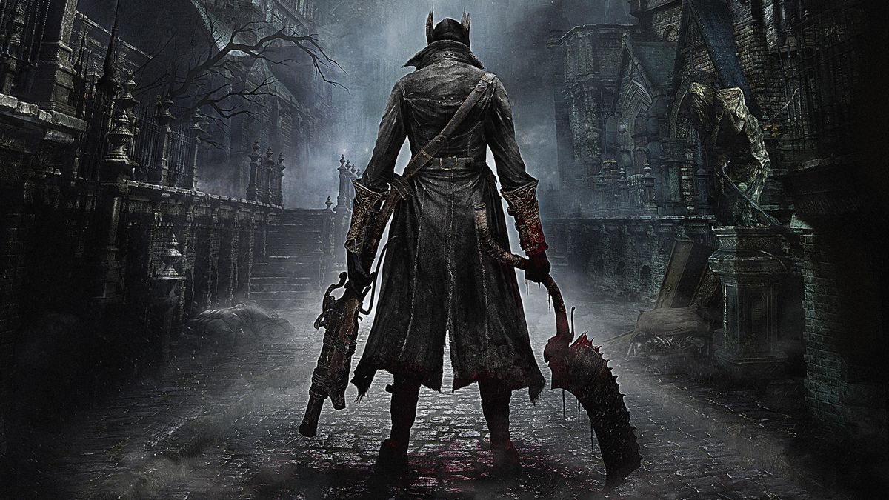
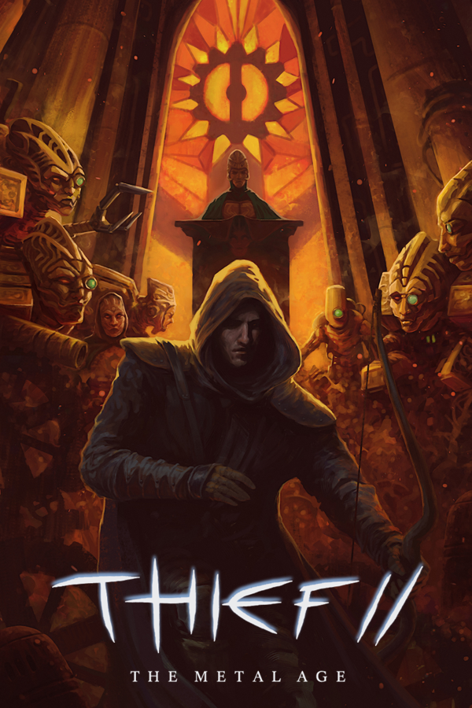
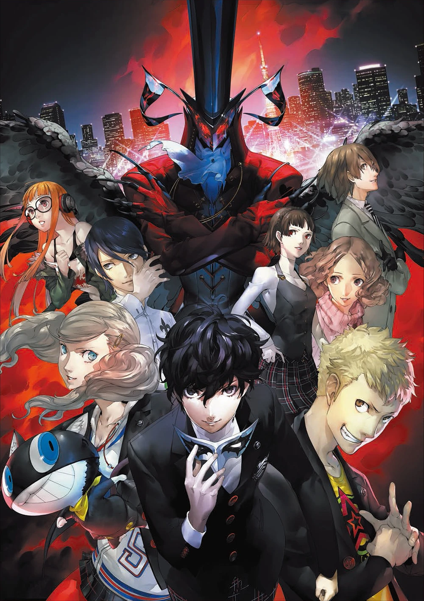

Leandro Bertholdo aka Berth
Sou alguém que encontra prazer tanto na simplicidade de um passeio de bicicleta quanto na complexidade de
mundos virtuais repletos de desafios e histórias cativantes. A música e os filmes são minhas janelas para
outras realidades, enquanto os jogos, especialmente os que exigem estratégia e criatividade, são meu campo
de exploração e expressão. Alterno entre momentos de leve introspecção e a energia de intensas experiências
sensoriais. Estou sempre em busca de novas experiências que me inspirem e me façam ver
o mundo de diferentes perspectivas.
Hobbies
- Andar de bicicleta
- Filmes
- Game modding
- Jogos (competitivos e single-player)
- Escutar música
Top 5 Jogos Favoritos
-

- Bloodborne
- Metal Gear Solid V: The Phantom Pain
- Devil May Cry 5 
- Thief 2: The Metal Age 
- Persona 5